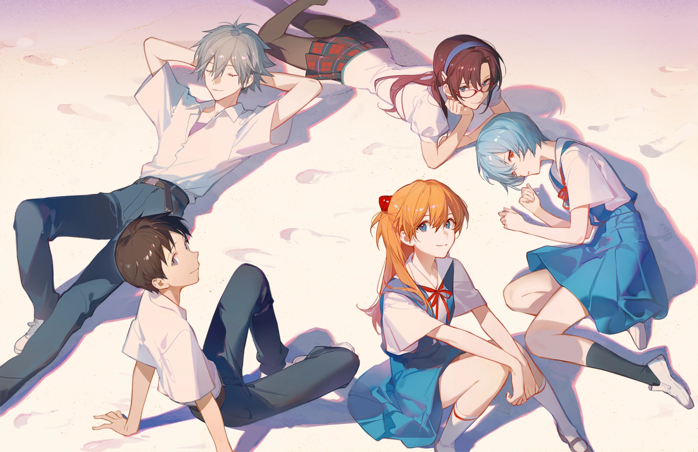

YANHONG386 / README.mdPUBLIC PROFILE

CODE. CREATE. PLAY.
DEVELOPER BY DAY. DREAMER ALWAYS.
YHONG386.
全栈开发工程师 · 重度二次元 · 深度游戏玩家
01 /
关于我ABOUT ME
A LITTLE BIT OF ME
写代码，也探索
每一个幻想世界。
你好，我是 YANHONG386，目前从事全栈开发工作，关注工程质量与产品体验。
使用 Java / Spring 构建服务，也使用 Vue / React 完成前端体验；同时探索 AI Agent、Prompt Engineering 与自动化工作流。
YHONG386BUILD SOMETHING. LOVE SOMETHING.
ONE ME. THREE WORLDS.
const me = { name: "YANHONG386", role: "Full-stack Dev", loves: "Build & Create"};
全栈开发，关注工程质量与产品体验。
WORK全栈开发
OTAKU重度二次元
GAMING深度游戏玩家
BackendJava / Spring
FrontendVue / React
AI & AutomationAgent / Workflow
02 /
我的世界MY WORLD
03 /
个人博客PERSONAL BLOG
PERSONAL BLOG / NOTES
yhong386.com
记录全栈开发实践、AI 探索笔记，
以及二次元与游戏生活。
04 /
技术栈MY TOOLKIT
GOOD TOOLS. BETTER IDEAS.
我的开发工具箱。
轻触图标，看看我的工具箱。12 TOOLS / ALWAYS EXPLORING
BACKENDJava · Spring · MyBatis
FRONTENDVue · React · JavaScript
DATAMySQL · Redis · RabbitMQ
AI / OPSAgent · Dify · Docker · Linux
05 /
找到我LET’S CONNECT
期待与你交流代码、动画和游戏。